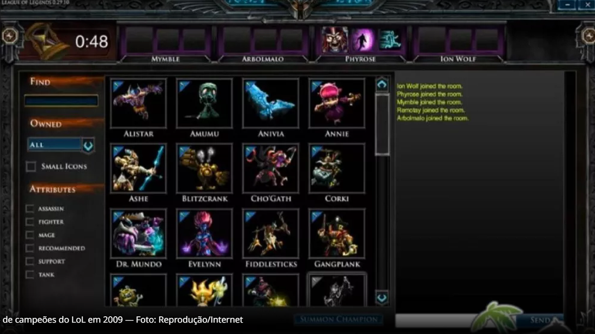
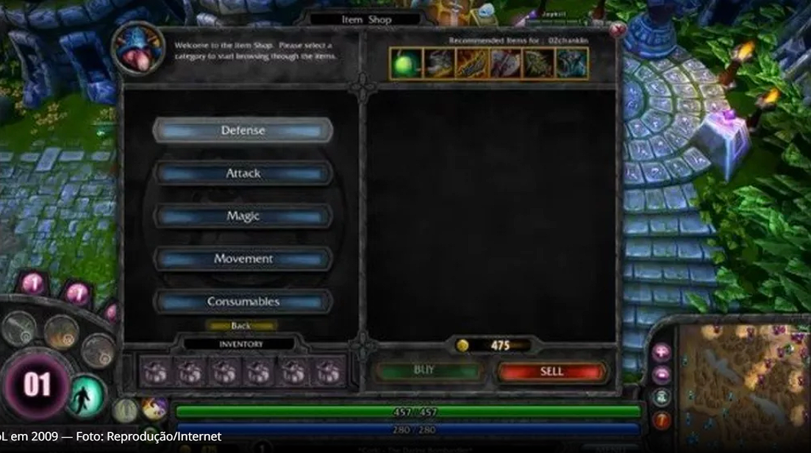

O início de League of Legends
Criadores e fase beta
League of Legends foi lançado em 27 de outubro de 2009 nos Estados Unidos. Brandon Beck e Marc Merill, fundadores da Riot Games, quiseram desenvolver um MOBA que seria um sucessor espiritual do Dota 2, o seu maior concorrente nos dias atuais.
O título foi anunciado em 7 de outubro de 2008, mas estava em desenvolvimento desde 2005. A fase beta do League of Legends ocorreu entre os dias 10 de abril de 2009 até um dia antes da data de lançamento oficial.
Summonner's Rift era muito diferente do que se pode ver hoje em dia. O mapa era cartunesco e as batalhas não eram tão intensas como agora. Além disso, os gráficos eram mais coloridos bem parecidos com o Warcraft nessa questão.
Os poucos campeões existentes tinham o visual menos detalhado dos atuais, assim como o cliente que também era bem mais simples: a tela de carregamento trazia imagens pixeladas e fundo preto apenas. Tudo lembrava jogos de RPG da época.
Campões Iniciais
Na fase beta, League of Legends contou com 17 personagens para os jogadores escolherem. A Riot Games pretendia lançar o jogo oficialmente com 20 campeões, mas dobrou o número. Veja abaixo a lista de campeões no início do MOBA.
- Alistar
- Annie
- Ashe
- Fiddlesticks
- Jax
- Kayle
- Master Yi
- Morgana
- Nunu & Willump
- Ryze
- Sion
- Sivir
- Soraka
- Teemo
- Tristana
- Twisted Fate
- Warwick
- Singed
- Zilean
- Evelynn
- Tryndamere
- Twitch
- Karthus
- Amumu
- Cho'Gath
- Anivia
- Rammus
- Veigar
- Kassadin
- Gangplank
- Taric
- Blitzcrank
- Dr. Mundo
- Janna
- Malphite
- Corki
- Katarina
- Nasus
- Heimerdinger
- Shaco
Gameplay
O League of Legends mudou muito em mais de dez anos de existência. O jogo pareceria outro: se quem joga hoje em dia visse as telas do jogadores da época, iria se surpreender com o tamanho da evolução do MOBA durante todos esses anos.
A interface de informações do jogador, por exemplo, ocupava a parte inferior toda da tela do usuário, o que prejudicava um pouco a jogabilidade. As sentinelas podiam ser colocadas em qualquer lugar do mapa. O jogo também era mais lento do que o atual meta. Outra diferença era a seguinte: o jogador tinha outras opções de customização antes das partidas.
Em 2009, o sistema de maestrias era capaz de aumentar a força do personagem antes das partidas. As runas chegaram apenas em julho de 2009, pouco antes do lançamento oficial. Depois de um certo tempo, as duas mecânicas foram unificadas e transformaram-se no que é a maestria nos dias atuais.
Itens
Alguns dos itens que os jogadores de League of Legends podem usar estão no jogo desde o seu lançamento, como Anel de Doran, Capa Negatron, Cetro de Cristal de Rylai, Coração Congelado, Escudo de Doran, Lâmina de Doran, Lâmina da Fúria de Guinsoo, Passos de Mercúrio, Perdição de Lich, Véu da Banshee entre outros.
Outros itens passaram por modificações ao longo do tempo ou foram, simplesmente, retirados do MOBA. No lançamento, as sentinelas podiam ser visíveis ou invisíveis, Deathfire Grasp dava 15% de dano baseado na vida máxima do oponente, Heart of Gold concedia +5 de ouro a cada 10 segundos para o jogador, Madred's Bloodrazer concedia velocidade de ataque e dano mágico de 4% a cada ataque baseado na vida máxima do adversário. 